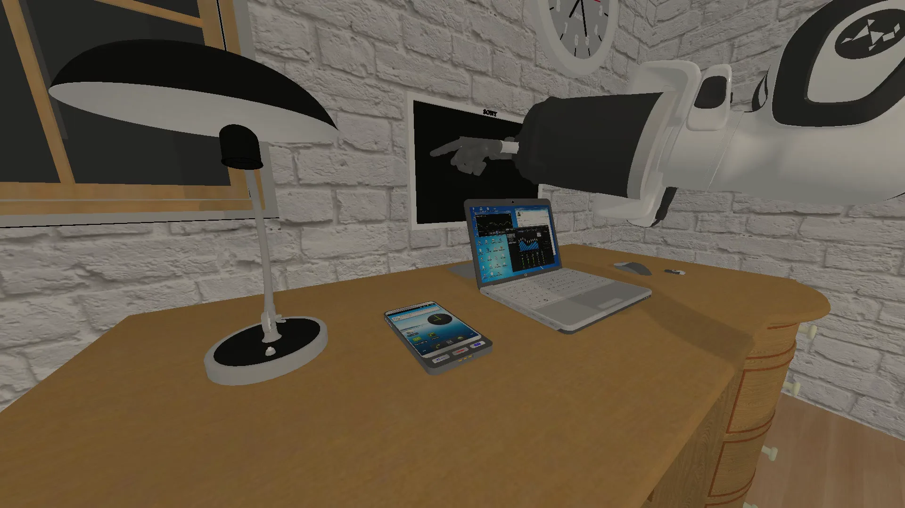
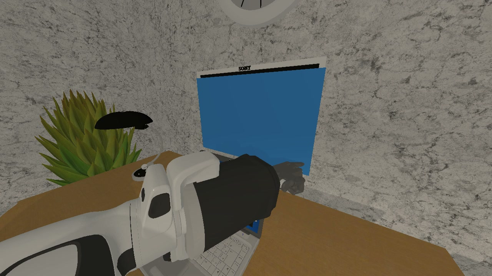

Learn from four related tasks.
Transfer with eight demos.
Display Power ButtonGen target

DEXTEROUS MANIPULATION · RELATED-TASK GENERALIZATION
Learn from four related tasks.
Transfer with eight demos.
Thirty dexterous tasks.
Single-hand and bimanual.
Three camera views. 123 taxels per hand.
Recorded in sync.
Five evaluation conditions.
100 episodes per task.
The benchmark in motion
Six functional families. Single-hand and bimanual manipulation.
Core–Gen protocol
Pressing a lamp button and pressing a display button are different tasks with a shared functional interaction. Core–Gen asks whether a policy can learn that relation—and use it with just a few target demonstrations.

GEN / TARGETRepresentative task demonstrations illustrate source relatedness. Experimental outcomes are reported in the results below.
01Control relatedness. Compare functionally matched and mismatched source tasks.
02Limit target exposure. Keep the target task few-shot with eight demonstrations.
03Measure transfer. Evaluate task success and meaningful partial progress.
Task families
From a single fingertip press to coordinated two-hand assembly. Each family pairs four related Core tasks with one few-shot Gen target.
Select a family. Hover to preview a task, or click it to explore its three scene layouts.
Multimodal dataset
Collected with Quest 3 VR teleoperation, the benchmark pairs visual context with hand configuration, tactile feedback, and actions. Every task spans three scene layouts.
Channel order, not a spatial map of the hand.
Three widescreen camera views and tactile measurements are captured together during a simulation replay.
Wrist motion and hand tracking control the simulated arm and Shadow Hand.
Multi-view images accompany distributed contact forces, proprioception and actions.
A multimodal source format and a training-oriented dataset export.
Evaluation protocol
A standard run covers 100 episodes per task: 20 under the nominal setup and 20 under each of four perturbation axes—camera, lighting, physical and spatial. Every episode reports task success and stage progress.
Standard reference schedule, illustrated here as episode groups. Dots do not encode outcomes.
Results
Six reference policies on 15 evaluated tasks. Start with the overall comparison, then inspect individual tasks and Core–Gen training settings.
Total success rate across the five evaluation conditions.
FAQ
How the benchmark works, what each episode contains and how to join the leaderboard.
Whether a policy can reuse experience from related tasks. Each of the six families pairs four Core tasks, with 50 demonstrations each, with one Gen task that has only eight. Comparing functionally matched and mismatched Core sources isolates how much task relatedness helps few-shot transfer.
Tasks run in ManiSkill 3 with a Franka Panda arm and a Shadow Hand. Bimanual tasks use two arm–hand pairs. Each hand carries 123 tactile channels, alongside visual and proprioceptive observations.
With Quest 3 VR teleoperation: wrist motion and hand tracking drive the simulated arm and hand. Every task spans three scene layouts. Episodes are stored as HDF5 and exported to LeRobot v3 for training.
Multi-view RGB images, distributed tactile forces, proprioception and actions. Original dataset images are 224 × 224. The HD views on this page are re-rendered from recorded actions for visualization.
A standard run has 100 episodes per task: 20 nominal and 20 for each of the camera, lighting, physical and spatial axes. Each episode changes at most one axis. Episodes are spread across the task’s three layouts, with 30 Hz control and 120 Hz simulation, and the schedule is deterministic.
SR is the fraction of episodes that satisfy the task’s final success predicate. StageScore is the mean highest stage reached, on a 0–1 scale, so meaningful partial progress still counts.
Yes. Implement a PolicySession that returns a SemanticAction through dex_benchmark.policy_api, then run dexbench evaluate. Inference can run in the simulator process or behind a separate model server. See the model integration guide.
Email a public paper, open-source code and complete results for all 30 tasks, covering Total SR, StageScore and all five evaluation conditions. Submissions are reviewed before they appear. Submission guide ›
Build on Evo-DexBench
Read the paper, run the benchmark and train on the multimodal dataset.
Benchmark design, task specifications, and experimental analysis.
arXiv:2610.21180Environment, task definitions, and evaluation tools.
GitHub / MINT-SJTUMultimodal demonstrations for Core–Gen policy learning.
Hugging Face / MINT-SJTUCode and dataset links point to the release destinations listed in the manuscript. Availability follows the project release.
@misc{cheng2026evodexbench,
title = {Evo-DexBench: Benchmarking Generalization across Related Tasks for Dexterous Manipulation},
author = {Cheng, Bing and Mao, Yiran and Ye, Zewei and Jin, Yifan and Chen, Xinyi and Tu, Ruifeng and Wang, Shuhuai and Lin, Tao and Zhou, Zhimu and Du, Yuxin and Zhong, Fangwei and Yan, Junchi and Zhao, Bo},
year = {2026},
eprint = {2610.21180},
archivePrefix = {arXiv},
primaryClass = {cs.RO},
url = {https://arxiv.org/abs/2610.21180}
}